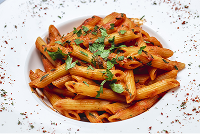

Pasta all’Arrabbiata
Penne pasta served in a spicy tomato sauce consisting of garlic, tomatoes, dried red chili peppers, and olive oil.

Allergy: Gluten and dairy.
Dietary Info: 409 calories, Carbs 15g, Fat 3.9g, Protein 7g. Ingredients List: Penne pasta, salt, extra virgin olive oil, garlic cloves, red cayenne pepper, chili flakes, crushed tomato, black pepper, white sugar, parmesan, and finely chopped parsley.